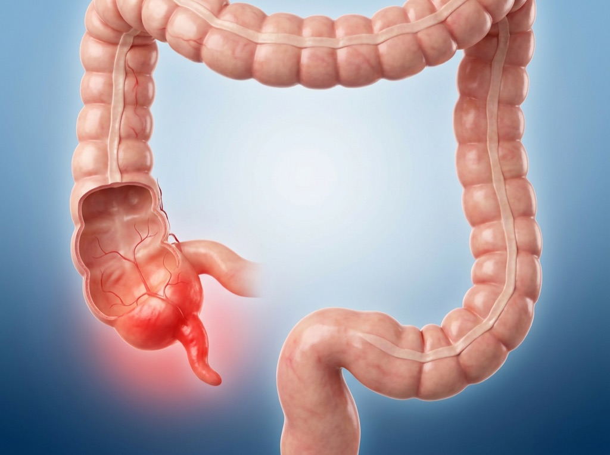

우측 하복부 통증과 반발 압통을 확인하세요

눌렀다 뗄 때 더 아픈 반발 압통이면 성인은 응급실에서 진찰과 CT 등 영상검사 여부를 확인하세요. 누를 때만 아픈 단순 압통은 오늘 의원에서 진찰합니다. 소아는 초음파 후 필요 시 CT/MRI로 이어질 수 있습니다.
| 신호 | 이렇게 나타납니다 |
|---|---|
| 단순 압통 | 오른쪽 아랫배를 누를 때만 아프고 뗄 때는 더하지 않음 — 오늘 의원 진찰. |
| 반발 압통 | 2-3초 눌렀다가 손을 뗄 때 통증이 더 심해집니다 — 응급실 평가. |
| 통증 지속·악화 | 동반 증상 |
|---|---|
| 장염약·복통약을 먹어도 좋아지지 않고 통증이 계속됩니다. | 식욕저하, 구역, 발열, 무기력감이 함께 생길 수 있습니다. |
맹장염 통증은 이렇게 시작될 수 있습니다
| ① 명치·배꼽 주변 불편감 | ② 구역·식욕저하 | ③ 우측 하복부로 이동 | ④ 복막 자극 신호 |
|---|---|---|---|
| 초기에는 위염·체기처럼 애매한 상복부 불편감으로 느껴질 수 있습니다. | 설사가 뚜렷하지 않아도 속이 메스껍고 식욕이 떨어질 수 있습니다. | 진행하면 오른쪽 아랫배 압통, 움직임·기침 시 통증이 뚜렷해집니다. | 반발 압통, 배가 단단해짐, 통증 악화는 응급 평가가 필요합니다. |
응급실 영상검사 고려
반발 압통, 배가 단단해짐, 걷기 어려운 통증이 있으면 맹장염·복막 자극 여부를 빠르게 확인해야 합니다.
 오른쪽 아랫배가 아니어도 의심해야 하는 경우
오른쪽 아랫배가 아니어도 의심해야 하는 경우
| 고령·소아 | 약 복용 후 지속 | 다른 복통 원인 |
|---|---|---|
| 통증·열·압통이 약하거나 위치 설명이 어려워 장염처럼 보일 수 있습니다. | 일반 장염약·복통약 후에도 통증이 계속되면 같은 날 재평가가 필요합니다. | 장염·위염, 요로결석, 담낭 질환, 여성 골반통도 감별이 필요합니다. |
진료실 설명 슬라이드(맹장염·게실염 구분) — edu.gwanggyobarun.com/decks/gi/appendicitis-diverticulitis/